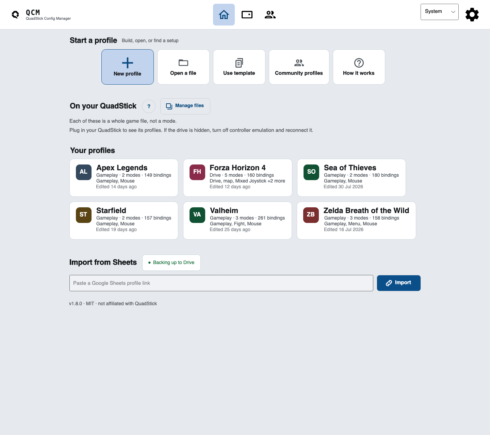
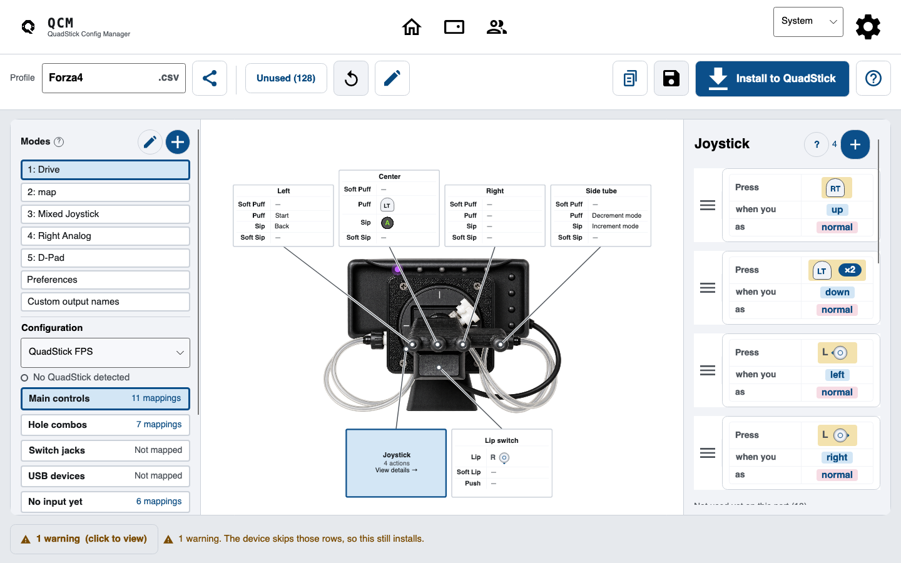
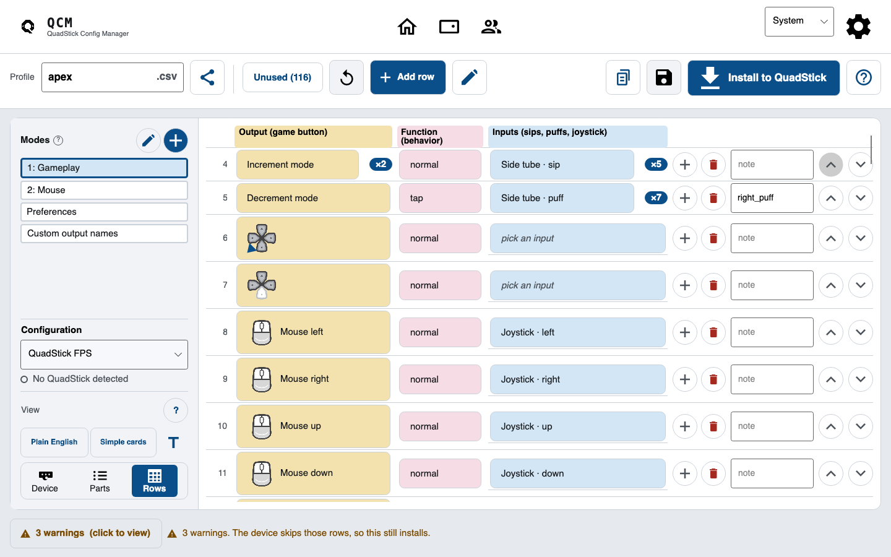
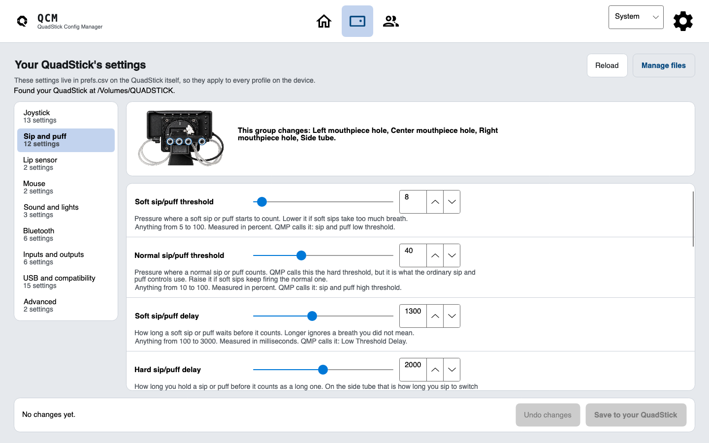
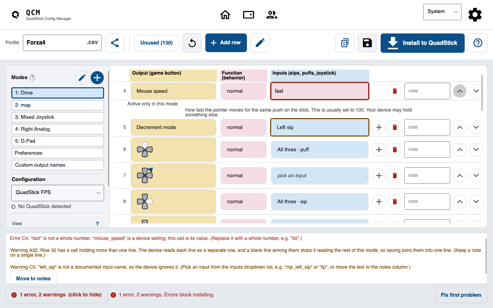
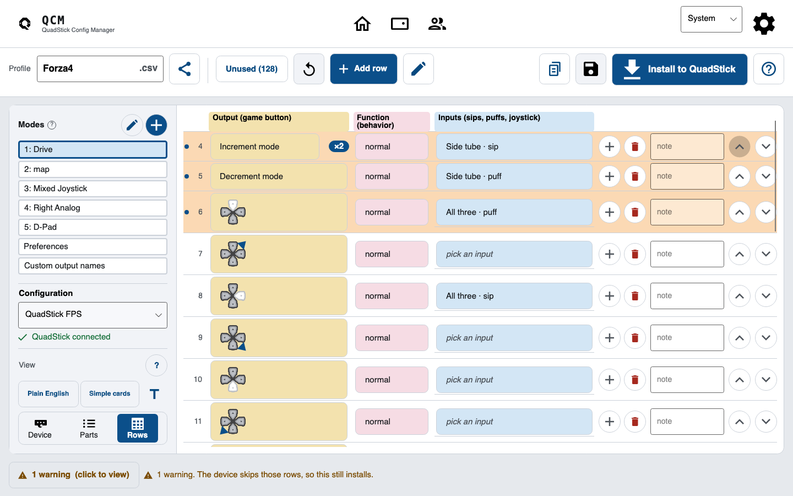

QuadStick Config Manager Guide
How to make a QuadStick game profile
A QuadStick game profile is a CSV file on the QuadStick's own drive. Each row names a game button (the output), how it presses (the function), and the sip, puff, lip press or joystick move that sets it off (the input). To make one, start from a profile that already works, change the rows for your game, fix anything that gets flagged, and install the file on the device.
This guide does it in QuadStick Config Manager, a free, open source app for Windows, macOS and Linux. The spreadsheet route that QuadStick's own tools use is at the end. Both make the same file.
1Get the app
Get it from the Mac App Store or the Microsoft Store, or take a zip (or a Linux tar.gz) from the GitHub releases page. Every build is in the download section. Everything below works offline except the Google Sheets features and the community list.
2Start from a profile that already works
Building from nothing is slow and easy to get wrong. Open something close and change it. The Home screen has a Start a profile row:
- New profile starts from the factory layout shipped on every QuadStick.
- Open a file opens a profile
.csv, or an.xlsxworkbook downloaded from Google Sheets. - Community profiles searches the shared list from quadstick.com. Import opens one in the editor and writes nothing to your QuadStick.
- Use template starts from a profile you saved with Save as template.
Import from Sheets, lower down, takes a Google Sheets link shared with "Anyone with the link". After an import, the Import review window says which tabs came in and which were left out.

Name it
The Profile box at the top of the editor is the file name on the device. Leave out spaces, and let the app add .csv. Keep the whole name to 31 characters with .csv, or the QuadStick cannot open it. Do not call it default unless you mean to replace the device's fallback file.
3Read a row: output, function, input
Every binding is one row with three parts, labelled and coloured like the official spreadsheets:
- Output (game button)
- What the game gets: a button like
xorleft_trigger, a mouse move likemouse_up, or a key likekb_space. - Function (behavior)
- How it presses.
normalholds the button while your input is active.toggleturns it on with one activation and off with the next. A blank function counts asnormal. - Inputs (sips, puffs, joystick)
- What you do. Up to eight, in columns C to J.
One input is a plain trigger. Two or more in one row are a sequence, not a chord: you do them one after the other, left to right, and the last one sets off the output.
Device view shows each binding beside a photo of the QuadStick; pick a part to change it. List view shows the rows the way the file stores them. Switch with Device and Rows under View, or Ctrl+D (Cmd+D on a Mac).


4Map sips and puffs
The FPS and the Original have a three hole mouthpiece and a side tube. Each takes a sip and a puff:
| Part | Sip | Puff |
|---|---|---|
| Left hole | mp_left_sip | mp_left_puff |
| Center hole | mp_center_sip | mp_center_puff |
| Right hole | mp_right_sip | mp_right_puff |
| Side tube | right_sip | right_puff |
Hole combos cover more than one hole at once, like mp_left_center_sip, or mp_triple_puff for all three. They suit actions you never want to set off by accident.
The factory profile puts increment_mode and decrement_mode on the side tube sip and puff, which is why the side tube changes mode until you remap it.
Set your model in the Configuration box on the left of the editor. Parts your model does not have are dimmed and marked Not on your model.
5Add soft sips and puffs
Each hole, each combo and the side tube also has a soft input ending in _soft, like mp_left_sip_soft. It lets a gentle sip do something different from a normal one.
This is how firmware 2373 tells them apart. A sip past the normal threshold counts as normal at once. If a soft input is mapped on that hole, a gentler sip, past the soft threshold only, counts as soft once it lasts the soft delay. It then stays soft until you let go, even if you sip harder. So on that hole, a normal sip has to cross the normal threshold before the soft delay runs out.
The levels are device settings in prefs.csv, shared by every profile. Change them on the Device screen under Sip and puff (Soft sip/puff threshold, Normal sip/puff threshold, Soft sip/puff delay), then press Save to your QuadStick.

6Use the lip switch
lip is the lip switch. The factory profile puts x on it. To give one input two jobs, use a function. For these two, the number after the name is milliseconds:
tap 300gives a short press if you let go within 300 ms. Hold longer and nothing fires.delayed_latchis a normal press when short. Hold past its time (one second if you give none) and the button locks on, with a beep.
7Map the joystick
Moving the mouthpiece works as a joystick. Its inputs are up, down, left and right, plus eight compass points such as N and NE. The factory profile sends the four directions to the left stick (left_joy_up and so on). For a mouse pointer, use the mouse outputs such as mouse_up instead.
greater_than 80 fires only once the stick is pushed at least 80 percent, so a small push and a full push can press different buttons.
8Add modes for different parts of a game
A mode is one full layout, like one for walking and one for driving. A profile holds up to 16, though most use one. The Modes list numbers them, and Edit modes adds, renames, reorders and deletes them.
Map increment_mode and decrement_mode to switch while playing. They step to the next or the previous mode, and wrap around at the ends.
The QuadStick tells modes apart by their order in the file, never by name, so two modes can share a name. Each mode holds up to 128 rows with an output.
9Fix what the Problems list flags
The bar at the bottom of the editor counts errors and warnings. Click it to open the Problems list. Each problem names its cell, like C4, says what is wrong, and says how to fix it.
- Errors block installing. The QuadStick would misread the row, or could not load the file. Fix first problem jumps to the first one.
- Warnings still install. They flag rows the device will skip, or read in a way you might not expect.

10Install it on the QuadStick
Plug the QuadStick in. It shows up on your computer as a drive. Save (Ctrl+S) keeps the profile on your computer. Install to QuadStick (Ctrl+I) is what writes to the device:
- It stops if the profile has errors.
- It finds the drive with
default.csvon it, and asks which one if there are several. - Before replacing
default.csvit asksOverwrite default.csv?
, because a wrong one can cut off the drive until a physical force-erase.prefs.csvgets its own question. - It copies the old file to a
QuadStickBackupsfolder in your home folder, with the time in its name. - It writes a temporary copy, reads it back, then swaps it in. If the swap fails, it puts the backup back, and says so if it cannot.
- It waits two seconds, then says
Safe to unplug.
The QuadStick keeps the end of a write in memory for about a second and a half, and unplugging inside that gap can break other files, most oftenprefs.csv.
If the drive does not show up, the QuadStick may be in a USB emulation mode that hides it. Turn controller emulation off and reconnect. The app will not install a default.csv or prefs.csv that sets one of those modes, because the device starts from those files and a computer could not reach them again.
11Load it and test it
default.csv loads by itself: at startup, and again whenever the device sees it or prefs.csv change.
Other files, you pick on the device. With Select files with the side tube on, a long hard sip on the side tube opens the file list. Push the joystick right or left to move one file, or up or down to move five. The lip switch, a center sip or puff, or the push switch loads it, and it starts on mode 1. default.csv comes first and the rest are sorted by name. Manage files on the Home screen shows that order and the lights for each position.
Then check it. With the editor showing QuadStick connected, a row lights while the device sends that row's output, so you can sip and watch. The device never says which file or mode is running, so a lit row can come from another profile. Mouse, keyboard and infrared outputs never light.

Common mistakes the app catches
These come from the checks the app runs. The quoted lines are what it says.
- A misspelled input.
The left hole sip isleft_sipis not a documented input name, so the device ignores it.mp_left_sip. If the text was a note, Move to notes puts it in a column the QuadStick never reads. - A row under a blank row. The device stops reading a mode at the first blank line, so rows below it do nothing.
- A word where a number goes. A device setting like
mouse_speedcan go in the output column to change it while a mode runs. Its value goes in column C as a whole number, so
is an error.fastis not a whole number - A decimal in a function. The device reads whole numbers only, so
repeat 2.5acts asrepeat 2. - A file name that is too long. Over 31 characters with
.csv, the QuadStick cannot load it, so the app will not install it. - Too many modes or rows. Past 16 modes, or 128 rows in a mode, the device drops the extras without a word.
- A note on two lines. The device reads each line as its own row, and a blank one ends the mode early. Saving joins the lines and warns you.
The spreadsheet route
QuadStick's own route is a spreadsheet. You fill in the same three columns in Google Sheets or Excel, and the QuadStick Manager Program (QMP) turns it into a CSV file and puts it on the device. It works, and the QuadStick user manual walks through it.
The file is the same either way, so you can switch. Import from Sheets brings a sheet into this app, and Share as a Google Sheet sends a profile back out to your own Google Drive. Whichever you use, keep backups on your computer. At startup the QuadStick deletes every file on its drive that is not a .csv, apart from joystick.bin.